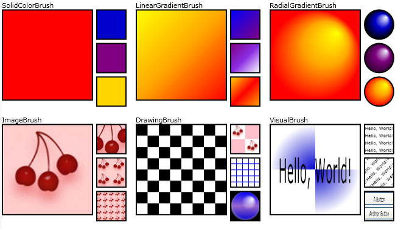
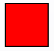
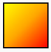
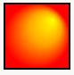
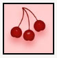
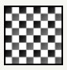
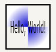

Общие сведения о кистях WPF
Все элементы, видимые на экране отображается, так как они нарисованы кистью. Например кисть используется для описания фона кнопки, основного цвета текста и заливки фигуры. В этом разделе понятия рисования с помощью Windows Presentation Foundation (WPF) кисти и приводятся примеры. Кисти позволяют заполнять объекты UI различными изображениями, начиная с просто сплошного цвета и заканчивая сложными наборами шаблонов и изображений.
Рисование с помощью кисти
Объект Brush «заполняет» область его выходные данные. Различных кистей имеют разные типы выходных данных. Некоторые кисти закрашивают область сплошным цветом, другие пользователи с градиентом, шаблон, изображения или рисования. Ниже показаны примеры каждого из Brush типов.

Примеры кисти
Большинство визуальных объектов дают возможность задать способ рисования. В следующей таблице перечислены некоторые распространенные объекты и свойства, с помощью которых можно использовать Brush.
| Класс | Свойства кисти |
|---|---|
| Border | BorderBrush, Background |
| Control | Background, Foreground |
| Panel | Background |
| Pen | Brush |
| Shape | Fill, Stroke |
| TextBlock | Background |
В следующих разделах описываются различные Brush типы, а также приведены примеры каждого из них.
Заливкой сплошным цветом
Объект SolidColorBrush закрашивает область сплошным Color. Существует множество способов указания Color из SolidColorBrush: например, можно указать его альфа-, красный, синий и зеленый каналы или использовать один из цветов, предоставленных Colors класса.
В следующем примере используется SolidColorBrush для закрашивания Fill из Rectangle. На следующем рисунке показан закрашенный прямоугольник.

Прямоугольник, закрашенный с использованием SolidColorBrush
Rectangle exampleRectangle = new Rectangle();
exampleRectangle.Width = 75;
exampleRectangle.Height = 75;
// Create a SolidColorBrush and use it to
// paint the rectangle.
SolidColorBrush myBrush = new SolidColorBrush(Colors.Red);
exampleRectangle.Fill = myBrush;
<Rectangle Width="75" Height="75">
<Rectangle.Fill>
<SolidColorBrush Color="Red" />
</Rectangle.Fill>
</Rectangle>
Дополнительные сведения о SolidColorBrush , представлена в разделе закраске сплошным цветом и градиентом Обзор.
Рисование с линейным градиентом
Объект LinearGradientBrush закрашивает область с линейным градиентом. Линейный градиент сочетает несколько цветов через строку оси градиента. Использовании GradientStop объекты для указания цветов в градиенте и их положения.
В следующем примере используется LinearGradientBrush для закрашивания Fill из Rectangle. На следующем рисунке показан закрашенный прямоугольник.

Прямоугольник, закрашенный с помощью LinearGradientBrush
Rectangle exampleRectangle = new Rectangle();
exampleRectangle.Width = 75;
exampleRectangle.Height = 75;
// Create a LinearGradientBrush and use it to
// paint the rectangle.
LinearGradientBrush myBrush = new LinearGradientBrush();
myBrush.GradientStops.Add(new GradientStop(Colors.Yellow, 0.0));
myBrush.GradientStops.Add(new GradientStop(Colors.Orange, 0.5));
myBrush.GradientStops.Add(new GradientStop(Colors.Red, 1.0));
exampleRectangle.Fill = myBrush;
<Rectangle Width="75" Height="75">
<Rectangle.Fill>
<LinearGradientBrush>
<GradientStop Color="Yellow" Offset="0.0" />
<GradientStop Color="Orange" Offset="0.5" />
<GradientStop Color="Red" Offset="1.0" />
</LinearGradientBrush>
</Rectangle.Fill>
</Rectangle>
Дополнительные сведения о LinearGradientBrush , представлена в разделе закраске сплошным цветом и градиентом Обзор.
Рисование с применением радиального градиента
Объект RadialGradientBrush закрашивает область с применением радиального градиента. Радиальный градиент сочетает несколько цветов через окружность. Как и в LinearGradientBrush , использовать GradientStop объекты для указания цветов в градиенте и их положения.
В следующем примере используется RadialGradientBrush для закрашивания Fill из Rectangle. На следующем рисунке показан закрашенный прямоугольник.

Прямоугольник, закрашенный с использованием RadialGradientBrush
Rectangle exampleRectangle = new Rectangle();
exampleRectangle.Width = 75;
exampleRectangle.Height = 75;
// Create a RadialGradientBrush and use it to
// paint the rectangle.
RadialGradientBrush myBrush = new RadialGradientBrush();
myBrush.GradientOrigin = new Point(0.75, 0.25);
myBrush.GradientStops.Add(new GradientStop(Colors.Yellow, 0.0));
myBrush.GradientStops.Add(new GradientStop(Colors.Orange, 0.5));
myBrush.GradientStops.Add(new GradientStop(Colors.Red, 1.0));
exampleRectangle.Fill = myBrush;
<Rectangle Width="75" Height="75">
<Rectangle.Fill>
<RadialGradientBrush GradientOrigin="0.75,0.25">
<GradientStop Color="Yellow" Offset="0.0" />
<GradientStop Color="Orange" Offset="0.5" />
<GradientStop Color="Red" Offset="1.0" />
</RadialGradientBrush>
</Rectangle.Fill>
</Rectangle>
Дополнительные сведения о RadialGradientBrush , представлена в разделе закраске сплошным цветом и градиентом Обзор.
Рисование с помощью изображения
ImageBrush Закрашивает область с ImageSource.
В следующем примере используется ImageBrush для закрашивания Fill из Rectangle. На следующем рисунке показан закрашенный прямоугольник.

Прямоугольник, закрашенный с помощью образа
Rectangle exampleRectangle = new Rectangle();
exampleRectangle.Width = 75;
exampleRectangle.Height = 75;
// Create an ImageBrush and use it to
// paint the rectangle.
ImageBrush myBrush = new ImageBrush();
myBrush.ImageSource =
new BitmapImage(new Uri(@"sampleImages\pinkcherries.jpg", UriKind.Relative));
exampleRectangle.Fill = myBrush;
<Rectangle Width="75" Height="75">
<Rectangle.Fill>
<ImageBrush ImageSource="sampleImages\pinkcherries.jpg" />
</Rectangle.Fill>
</Rectangle>
Дополнительные сведения о ImageBrush , представлена в разделе Рисование с помощью изображений, рисунков и визуальных элементов.
Рисования с помощью рисунка
Объект DrawingBrush закрашивает область с Drawing. Объект Drawing может содержать фигуры, изображения, текста и мультимедиа.
В следующем примере используется DrawingBrush для закрашивания Fill из Rectangle. На следующем рисунке показан закрашенный прямоугольник.

Прямоугольник, закрашенный с помощью DrawingBrush
Rectangle exampleRectangle = new Rectangle();
exampleRectangle.Width = 75;
exampleRectangle.Height = 75;
// Create a DrawingBrush and use it to
// paint the rectangle.
DrawingBrush myBrush = new DrawingBrush();
GeometryDrawing backgroundSquare =
new GeometryDrawing(
Brushes.White,
null,
new RectangleGeometry(new Rect(0, 0, 100, 100)));
GeometryGroup aGeometryGroup = new GeometryGroup();
aGeometryGroup.Children.Add(new RectangleGeometry(new Rect(0, 0, 50, 50)));
aGeometryGroup.Children.Add(new RectangleGeometry(new Rect(50, 50, 50, 50)));
LinearGradientBrush checkerBrush = new LinearGradientBrush();
checkerBrush.GradientStops.Add(new GradientStop(Colors.Black, 0.0));
checkerBrush.GradientStops.Add(new GradientStop(Colors.Gray, 1.0));
GeometryDrawing checkers = new GeometryDrawing(checkerBrush, null, aGeometryGroup);
DrawingGroup checkersDrawingGroup = new DrawingGroup();
checkersDrawingGroup.Children.Add(backgroundSquare);
checkersDrawingGroup.Children.Add(checkers);
myBrush.Drawing = checkersDrawingGroup;
myBrush.Viewport = new Rect(0, 0, 0.25, 0.25);
myBrush.TileMode = TileMode.Tile;
exampleRectangle.Fill = myBrush;
<Rectangle Width="75" Height="75">
<Rectangle.Fill>
<DrawingBrush Viewport="0,0,0.25,0.25" TileMode="Tile">
<DrawingBrush.Drawing>
<DrawingGroup>
<GeometryDrawing Brush="White">
<GeometryDrawing.Geometry>
<RectangleGeometry Rect="0,0,100,100" />
</GeometryDrawing.Geometry>
</GeometryDrawing>
<GeometryDrawing>
<GeometryDrawing.Geometry>
<GeometryGroup>
<RectangleGeometry Rect="0,0,50,50" />
<RectangleGeometry Rect="50,50,50,50" />
</GeometryGroup>
</GeometryDrawing.Geometry>
<GeometryDrawing.Brush>
<LinearGradientBrush>
<GradientStop Offset="0.0" Color="Black" />
<GradientStop Offset="1.0" Color="Gray" />
</LinearGradientBrush>
</GeometryDrawing.Brush>
</GeometryDrawing>
</DrawingGroup>
</DrawingBrush.Drawing>
</DrawingBrush>
</Rectangle.Fill>
</Rectangle>
Дополнительные сведения о DrawingBrush , представлена в разделе Рисование с помощью изображений, рисунков и визуальных элементов.
Рисование с помощью Visual
Объект VisualBrush закрашивает область с Visual объекта. Примеры визуальных объектов Button, Page, и MediaElement. Объект VisualBrush также позволяет переносить содержимое из одной части приложения в другую область; это очень полезно для создания эффектов отражения или увеличении части экрана.
В следующем примере используется VisualBrush для закрашивания Fill из Rectangle. На следующем рисунке показан закрашенный прямоугольник.

Прямоугольник, закрашенный с использованием VisualBrush
Rectangle exampleRectangle = new Rectangle();
exampleRectangle.Width = 75;
exampleRectangle.Height = 75;
// Create a VisualBrush and use it
// to paint the rectangle.
VisualBrush myBrush = new VisualBrush();
//
// Create the brush's contents.
//
StackPanel aPanel = new StackPanel();
// Create a DrawingBrush and use it to
// paint the panel.
DrawingBrush myDrawingBrushBrush = new DrawingBrush();
GeometryGroup aGeometryGroup = new GeometryGroup();
aGeometryGroup.Children.Add(new RectangleGeometry(new Rect(0, 0, 50, 50)));
aGeometryGroup.Children.Add(new RectangleGeometry(new Rect(50, 50, 50, 50)));
RadialGradientBrush checkerBrush = new RadialGradientBrush();
checkerBrush.GradientStops.Add(new GradientStop(Colors.MediumBlue, 0.0));
checkerBrush.GradientStops.Add(new GradientStop(Colors.White, 1.0));
GeometryDrawing checkers = new GeometryDrawing(checkerBrush, null, aGeometryGroup);
myDrawingBrushBrush.Drawing = checkers;
aPanel.Background = myDrawingBrushBrush;
// Create some text.
TextBlock someText = new TextBlock();
someText.Text = "Hello, World";
FontSizeConverter fSizeConverter = new FontSizeConverter();
someText.FontSize = (double)fSizeConverter.ConvertFromString("10pt");
someText.Margin = new Thickness(10);
aPanel.Children.Add(someText);
myBrush.Visual = aPanel;
exampleRectangle.Fill = myBrush;
<Rectangle Width="75" Height="75">
<Rectangle.Fill>
<VisualBrush TileMode="Tile">
<VisualBrush.Visual>
<StackPanel>
<StackPanel.Background>
<DrawingBrush>
<DrawingBrush.Drawing>
<GeometryDrawing>
<GeometryDrawing.Brush>
<RadialGradientBrush>
<GradientStop Color="MediumBlue" Offset="0.0" />
<GradientStop Color="White" Offset="1.0" />
</RadialGradientBrush>
</GeometryDrawing.Brush>
<GeometryDrawing.Geometry>
<GeometryGroup>
<RectangleGeometry Rect="0,0,50,50" />
<RectangleGeometry Rect="50,50,50,50" />
</GeometryGroup>
</GeometryDrawing.Geometry>
</GeometryDrawing>
</DrawingBrush.Drawing>
</DrawingBrush>
</StackPanel.Background>
<TextBlock FontSize="10pt" Margin="10">Hello, World!</TextBlock>
</StackPanel>
</VisualBrush.Visual>
</VisualBrush>
</Rectangle.Fill>
</Rectangle>
Дополнительные сведения о VisualBrush , представлена в разделе Рисование с помощью изображений, рисунков и визуальных элементов.
Рисование с помощью готовых и системных кистей
Для удобства Windows Presentation Foundation (WPF) предоставляет набор предопределенных, и система кистей, можно использовать для рисования объектов.
Список доступных стандартных кистей, см. в разделе Brushes класса. Пример, демонстрирующий использование стандартной кисти, см. в разделе закрасить область сплошным цветом.
Список доступных системных кистей, см. в разделе SystemColors класса. Например, см. в разделе Закраска области с помощью системной кисти.
Общие средства кисти
Brush объекты предоставляют Opacity свойство, которое может использоваться для сделать кисти прозрачным или полупрозрачным. Opacity Значение 0, делает кисть полностью прозрачной, а Opacity значение 1, делает кисть полностью непрозрачными. В следующем примере используется Opacity свойства SolidColorBrush непрозрачности 25 процентов.
<Rectangle Width="100" Height="100">
<Rectangle.Fill>
<SolidColorBrush Color="Blue" Opacity="0.25" />
</Rectangle.Fill>
</Rectangle>
Rectangle myRectangle = new Rectangle();
myRectangle.Width = 100;
myRectangle.Height = 100;
SolidColorBrush partiallyTransparentSolidColorBrush
= new SolidColorBrush(Colors.Blue);
partiallyTransparentSolidColorBrush.Opacity = 0.25;
myRectangle.Fill = partiallyTransparentSolidColorBrush;
Если кисть, которая содержит полупрозрачные цвета, значение непрозрачности цвета объединяется путем умножения значение непрозрачности кисти. Например если кисти имеет значение 0,5 и цвет, используемый в кисть, которая также имеет значение 0,5, выходной цвет имеет значение непрозрачности 0,25.
Note
Более эффективно, чтобы изменить значение непрозрачности кисти, а не для изменения прозрачности всего элемента с помощью его UIElement.Opacity свойство.
Поворот, масштабирование, наклон и преобразует содержимое кисти с помощью его Transform или RelativeTransform свойства. Дополнительные сведения см. в разделе Общие сведения о преобразованиях кистей.
Так как они Animatable объектов, Brush объекты могут быть анимированы. Более подробную информацию см. в разделе Общие сведения об эффектах анимации.
Возможности объектов Freezable
Так как он наследует от Freezable класс, Brush класс предоставляет ряд специальных возможностей: Brush объекты могут быть объявлены как ресурсысовместно использоваться несколькими объектами и клонировать. Кроме того все Brush за исключением VisualBrush можно делать доступными только для чтения с целью повышения производительности и делать потокобезопасными.
Дополнительные сведения о различных возможностях, предоставляемых Freezable объектов, см. в разделе Freezable Общие сведения об объектах.
Дополнительные сведения о том, почему VisualBrush объектов не может быть зафиксировано, см. в разделе VisualBrush страница "тип".
См. также
- Brush
- Brushes
- Общие сведения о закраске сплошным цветом и градиентом
- Рисование с помощью объектов Image, Drawing и Visual
- Общие сведения об объектах класса Freezable
- Пример использования кистей
- Пример использования кистей
- Пример использования VisualBrush
- Практические руководства
- Дополнительные рекомендации по повышению производительности